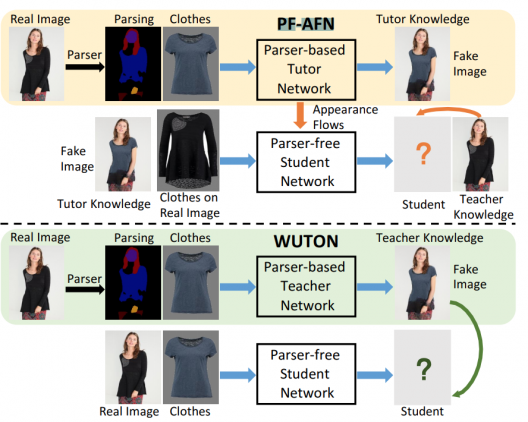
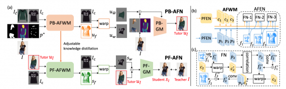

НPF-AFN — это нейросеть, которая генерирует изображения с примеркой одежды. Модель принимает на вход изображение человека и изображение предмета одежды. На выходе модель отдает изображение, на котором на целевую персону надет предмет одежды. Нейросеть обходит предыдущие подходы, которые основываются на модели сегментации частей человека.
Задача виртуальной примерки одежды по изображению заключается в том, что бы наложить изображение целевого объекта одежды на изображение человека. Предыдущие подходы опирались на разметку изображения человека. Однако незначительные ошибки в сегментации приводили к нереалистичным изображениям, которые содержали визуальные артефакты. Последние работы использовали подход дистилляции знаний, чтобы сократить зависимости модели от парсинга человека на изображении. В таком случае изображения с примеркой одежды, которые сгенерировал метод, основывающийся на парсере, используются как разметка для обучения модели-студента. Модель-студент не опирается на разметку человека на изображении при генерации изображений с примеркой. В свою очередь, учится реплицировать поведение модели-учителя. Однако качество модели-студента ограничено моделью-учителем, которая основана на парсере. Чтобы обойти это ограничение, исследователи предлагают подход для дистилляции знаний «учитель-репетитор-студент» («teacher-tutor-student»).
Предложенный подход позволяет генерировать высоко реалистичные изображения без сегментации человека на изображении. Такой подход позволяет использовать изображения, которые сгенерировал метод с парсером, в качестве знаний репетитора. Артефакты на таких изображениях могут быть исправлены в self-supervised формате с помощью знаний учителя, которые извлекаются из изображений реальных людей.
Сравнение предложенной модели с альтернативным подходом, который не использует парсер человека
Исследователи формулируют задачу дистилляции знаний для генерации изображений с примеркой как дистилляцию потоков внешнего вида между изображением человека и изображением вещи. Это позволяет находить соответствия между ними и генерировать изображения в высоком качестве.
В сравнении с state-of-the-art подходами, которые основываются на парсерах, и тех, что не используют парсер человека на изображении, предложенная модель выдает более реалистичные результаты. Среди методов, основанных на парсерах: CP-VTON, ClothFlow, CP-VTON+ и ACGPN. Единственная альтернативная модель без парсера — WUTON.